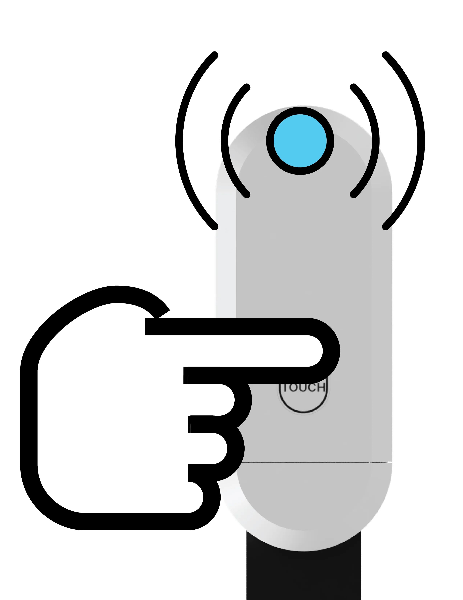

Introduction
SoilPulse delivers real-time root-zone insights straight to your device. Insert into soil, tap, and connect — get instant soil insights in seconds.
- Root-Zone Accuracy — moisture and temperature right where roots drink.
- Instant Local Access — open directly in browser; 100% private with no cloud subscription.
- Smart Home Ready — seamless Home Assistant integration via Bluetooth.
Meet Your Sensor
1
Touch Pad — tap to wake Bluetooth.
2
Device QR — scan with camera.
3
Optimal Depth — insert to the line (≈ 2.4 in).
4
Temperature Sensor — root-zone temperature probe.
Quick Setup
- Install batteries — Open cover, insert 2× AAA (+/−), seal tightly.
- Insert into soil — Insert probe to the OPTIMAL DEPTH line (≈ 2.4 in). Pack soil around probe.
- Wake sensor — Tap the top touch pad to activate the device.

Touch to Wake & Connect
• Wakes from sleep mode
• Starts Bluetooth broadcast
• Ready to pair & connect
Connect — Web Dashboard
1. Open the Web Dashboard
⚡ Turn on Bluetooth & grant browser permission.
2. Click “Connect” and select SoilPulse.
Web Dashboard Tips
- 📊 Live Data & Trends — real-time readings & chart history.
- 🔄 On-Demand Refresh — click Refresh for instant sync.
- ⚙️ Settings & Management — rename, calibration, OTA, and reset.
Connect — Home Assistant
Powered by BTHome — requires Bluetooth enabled in Home Assistant.
- Open HA — Navigate to Settings → Devices & Services.
- Wake sensor — Tap touch pad to make it discoverable.
- Add device — Click Add on the discovered SoilPulse card.
⚡ Power Saver Design: Sensor broadcasts every 10 min. Brief “Unavailable” status between updates in HA is normal.
Specifications
| In the Box | SoilPulse Sensor (Batteries not included) |
| Battery | 2× AAA (Alkaline recommended) |
| Battery life | Up to 1–2 years (depending on battery & usage) |
| Operating Temperature | −20 to +60 °C (−4 to +140 °F) |
| Wireless range | Up to 100 ft (open space) |
| Interval | Every 10 min |
| Water resistance | Weatherproof (rain & watering safe & brief pooling safe) |
| Connectivity | Web Bluetooth LE |
| Smart Home | Home Assistant via BTHome |
Troubleshooting
- Can’t connect? Wake sensor by tapping touch pad, grant Bluetooth permission, then tap Connect device.
- No new data? Click Refresh after connecting — updates in a few seconds.
- Odd readings? Insert probe fully to the OPTIMAL DEPTH line; avoid air gaps in soil.
- Unavailable in HA? Normal — sensor broadcasts every 10 min. Data arrives automatically.
Support
Email: support@alinfancy.com
Questions or feedback? We’re happy to help. Thank you for choosing SoilPulse!
Battery Safety
Use 2× AAA batteries. Do not mix old and new batteries, or different brands. Remove batteries if the device is stored for an extended period to prevent leakage.
FCC Statement
Contains FCC ID: 2AMM6-825X1BA
This device complies with Part 15 of the FCC Rules. Operation is subject to the following two conditions: (1) this device may not cause harmful interference, and (2) this device must accept any interference received, including interference that may cause undesired operation.
Note: This equipment has been tested and found to comply with the limits for a Class B digital device, pursuant to Part 15 of the FCC Rules. These limits are designed to provide reasonable protection against harmful interference in a residential installation.
Changes or modifications not expressly approved by the party responsible for compliance could void the user’s authority to operate the equipment.